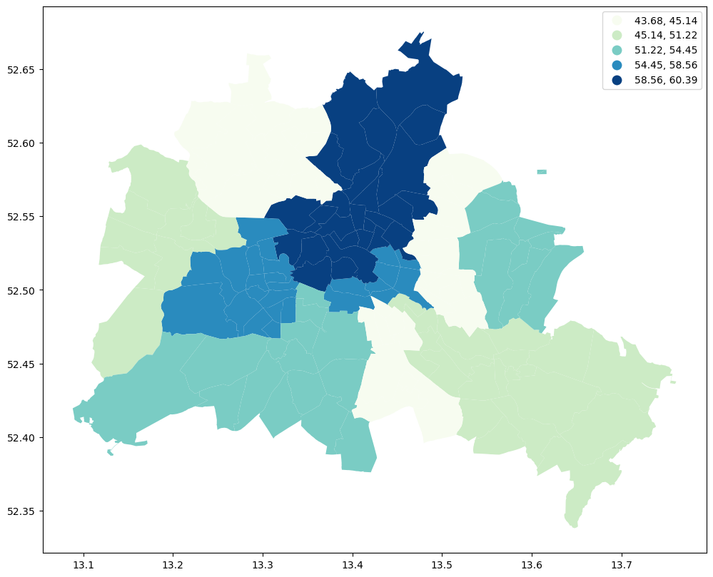
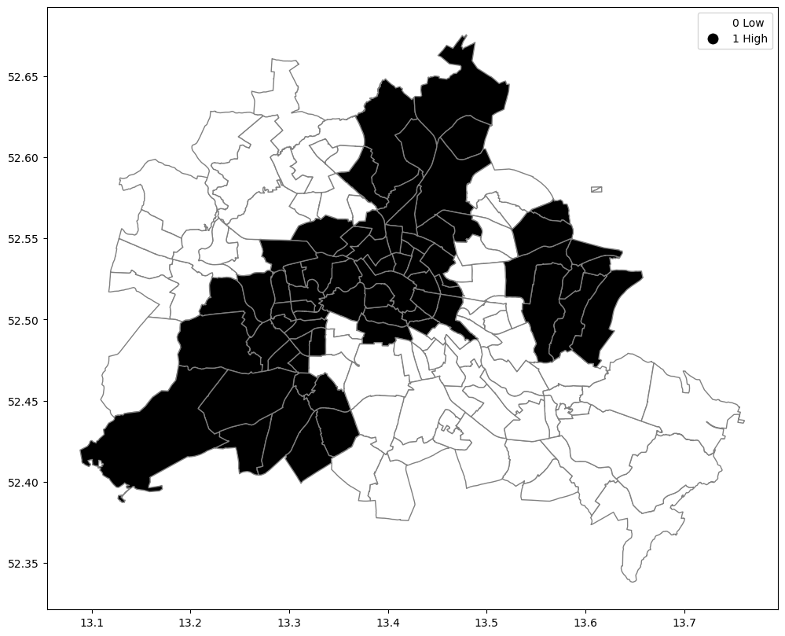
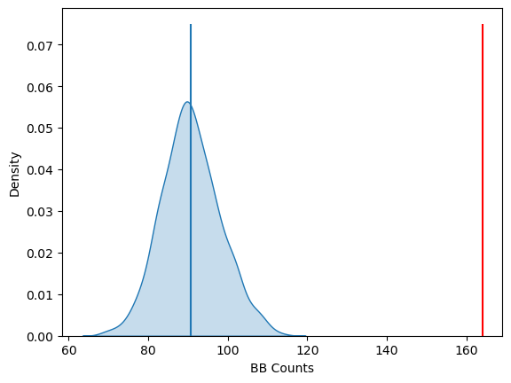

This page was generated from build/.jupyter_cache/executed/2d058ab281425b8d2633e575f415f52a/base.ipynb.
Interactive online version:

[1]:
import warnings
import geopandas as gpd
import libpysal as lps
import matplotlib.pyplot as plt
import numpy as np
import pandas as pd
import esda
[2]:
gdf = gpd.read_file("data/berlin-neighbourhoods.geojson")
[3]:
bl_df = pd.read_csv("data/berlin-listings.csv")
geometry = gpd.points_from_xy(x=bl_df.longitude, y=bl_df.latitude, crs='epsg:4326')
bl_gdf = gpd.GeoDataFrame(bl_df, geometry=geometry)
[4]:
bl_gdf["price"] = bl_gdf["price"].astype("float32")
sj_gdf = gpd.sjoin(
gdf, bl_gdf, how="inner", predicate="intersects", lsuffix="left", rsuffix="right"
)
median_price_gb = sj_gdf["price"].groupby([sj_gdf["neighbourhood_group"]]).mean()
median_price_gb
[4]:
neighbourhood_group
Charlottenburg-Wilm. 58.556408
Friedrichshain-Kreuzberg 55.492809
Lichtenberg 44.584270
Marzahn - Hellersdorf 54.246754
Mitte 60.387890
Neukölln 45.135948
Pankow 60.282516
Reinickendorf 43.682465
Spandau 48.236561
Steglitz - Zehlendorf 54.445683
Tempelhof - Schöneberg 53.704407
Treptow - Köpenick 51.222004
Name: price, dtype: float32
[5]:
gdf = gdf.join(median_price_gb, on="neighbourhood_group")
gdf.rename(columns={"price": "median_pri"}, inplace=True)
gdf.head(15)
[5]:
| neighbourhood | neighbourhood_group | geometry | median_pri | |
|---|---|---|---|---|
| 0 | Blankenfelde/Niederschönhausen | Pankow | MULTIPOLYGON (((13.41191 52.61487, 13.41183 52... | 60.282516 |
| 1 | Helmholtzplatz | Pankow | MULTIPOLYGON (((13.41405 52.54929, 13.41422 52... | 60.282516 |
| 2 | Wiesbadener Straße | Charlottenburg-Wilm. | MULTIPOLYGON (((13.30748 52.46788, 13.30743 52... | 58.556408 |
| 3 | Schmöckwitz/Karolinenhof/Rauchfangswerder | Treptow - Köpenick | MULTIPOLYGON (((13.70973 52.3963, 13.70926 52.... | 51.222004 |
| 4 | Müggelheim | Treptow - Köpenick | MULTIPOLYGON (((13.73762 52.4085, 13.73773 52.... | 51.222004 |
| 5 | Biesdorf | Marzahn - Hellersdorf | MULTIPOLYGON (((13.56643 52.5351, 13.56697 52.... | 54.246754 |
| 6 | Nord 1 | Reinickendorf | MULTIPOLYGON (((13.33669 52.62265, 13.33663 52... | 43.682465 |
| 7 | West 5 | Reinickendorf | MULTIPOLYGON (((13.28138 52.59958, 13.28158 52... | 43.682465 |
| 8 | Frankfurter Allee Nord | Friedrichshain-Kreuzberg | MULTIPOLYGON (((13.4532 52.51682, 13.45321 52.... | 55.492809 |
| 9 | Buch | Pankow | MULTIPOLYGON (((13.4645 52.65055, 13.46457 52.... | 60.282516 |
| 10 | Kaulsdorf | Marzahn - Hellersdorf | MULTIPOLYGON (((13.62135 52.52704, 13.62196 52... | 54.246754 |
| 11 | NaN | NaN | MULTIPOLYGON (((13.61659 52.58154, 13.61458 52... | NaN |
| 12 | NaN | NaN | MULTIPOLYGON (((13.61668 52.57868, 13.60703 52... | NaN |
| 13 | nördliche Luisenstadt | Friedrichshain-Kreuzberg | MULTIPOLYGON (((13.4443 52.50066, 13.44266 52.... | 55.492809 |
| 14 | Nord 2 | Reinickendorf | MULTIPOLYGON (((13.3068 52.58606, 13.30667 52.... | 43.682465 |
[6]:
pd.isnull(gdf["median_pri"]).sum()
[6]:
np.int64(2)
[7]:
gdf["median_pri"] = gdf["median_pri"].fillna(gdf["median_pri"].mean())
[8]:
gdf.plot(column="median_pri")
[8]:
<Axes: >

[9]:
fig, ax = plt.subplots(figsize=(12, 10), subplot_kw={"aspect": "equal"})
gdf.plot(column="median_pri", scheme="Quantiles", k=5, cmap="GnBu", legend=True, ax=ax)
# ax.set_xlim(150000, 160000)
# ax.set_ylim(208000, 215000)
[9]:
<Axes: >

[10]:
df = gdf
wq = lps.weights.Queen.from_dataframe(df, use_index=False, silence_warnings=True)
wq.transform = "r"
[11]:
y = df["median_pri"]
ylag = lps.weights.lag_spatial(wq, y)
[12]:
y.median()
[12]:
np.float32(53.704407)
[13]:
yb = y > y.median()
sum(yb)
[13]:
68
[14]:
yb = y > y.median()
labels = ["0 Low", "1 High"]
yb = [labels[i] for i in 1 * yb]
df["yb"] = yb
[15]:
fig, ax = plt.subplots(figsize=(12, 10), subplot_kw={"aspect": "equal"})
df.plot(column="yb", cmap="binary", edgecolor="grey", legend=True, ax=ax)
[15]:
<Axes: >

[16]:
yb = 1 * (y > y.median()) # convert back to binary
wq = lps.weights.Queen.from_dataframe(df, use_index=False, silence_warnings=True)
wq.transform = "b"
np.random.seed(12345)
jc = esda.join_counts.Join_Counts(yb, wq)
[17]:
jc.bb
[17]:
np.float64(164.0)
[18]:
jc.ww
[18]:
np.float64(149.0)
[19]:
jc.bw
[19]:
np.float64(73.0)
[20]:
jc.bb + jc.ww + jc.bw
[20]:
np.float64(386.0)
[21]:
wq.s0 / 2
[21]:
np.float64(386.0)
[22]:
jc.bb
[22]:
np.float64(164.0)
[23]:
jc.mean_bb
[23]:
np.float64(90.70170170170171)
[24]:
import seaborn as sbn
sbn.kdeplot(jc.sim_bb, fill=True)
plt.vlines(jc.bb, 0, 0.075, color="r")
plt.vlines(jc.mean_bb, 0, 0.075)
plt.xlabel("BB Counts")
[24]:
Text(0.5, 0, 'BB Counts')

[25]:
jc.p_sim_bb
[25]:
np.float64(0.001)
[ ]: